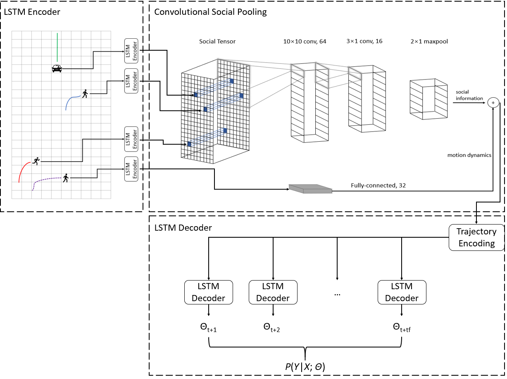

|
Yunchang Zhang(张运昌) zhan2854@purdue.edu
|
Human Motion Detection, Tracking, and Predictions
Pedestrian & Vehicle Detection and Tracking

STG-Seq2Seq: Motion Prediction for Heterogeneous Road Users
InteractionNet: Human & Driver Motion Prediction

Pedestrian-Motorist Interaction: A Game Theoretical Framework
Deep Reinforcement Learning-based Smart Traffic Control
Pedestrian Smart Signal using Deep Reinforcement Learning

Urban Analytics & Computing
Estimating the Causal Impact of COVID-19 on Micromobility
My colleague published a demo of our work for the EPJ Data Science paper. Feel free to check it here.
Bayesian Updating of Human Behavior Data
We published the tutorial of the Bayesian updating using Stan. Feel free to check it here.